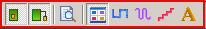
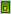
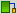
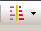
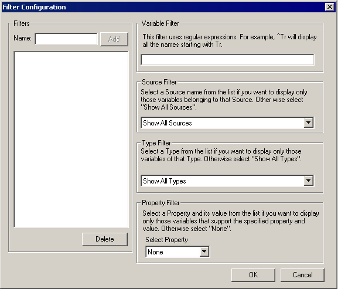
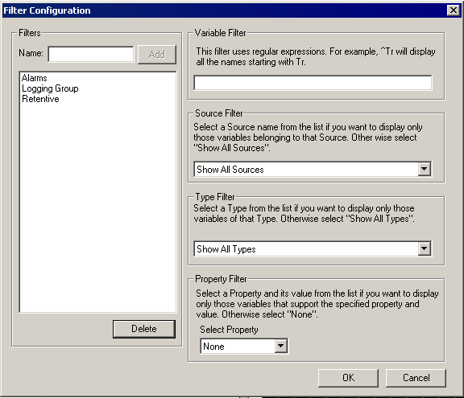

|
|
|
|
|
|
|
|
Some projects have many variables. Using filters, you can set the conditions for the variables to be displayed in the variable list. Variables that do not meet the specified conditions are hidden from the variable list. With filters, you can sort variables by the expressions used in the variables, the data source, the data type, and the variable properties. You can also use a mixture of these filters to customize their sorting.
You can use filters more effectively when you create naming conventions for your variables. For example, at the beginning of a variable name, attach the D or W of the device address to the variable name, naming the variable D100_Tank, D101_Tank2, W100_Pump. You can then configure the filter to only display the variables that begin with D. This helps you organize and view specific variables in a project that has many variables.
In the initial settings, a filter is configured to not display system variables.
You can filter the variables displayed in the Variable List using the icons at the top of the Navigator window.

You can filter variables by:
|
|
Icon |
Show: |
|
Data Source |
 |
Internal |
|
 |
External |
|
|
System Variables |
||
|
Data Type |
|
All |
|
|
BOOL |
|
|
|
INT, DINT, UINT, UDINT, Integer, Block INT, Block DINT, Block UINT, Block Integer |
|
|
|
REAL, Block REAL |
|
|
|
|
STRING |
In the Variable Editor, click the Filter icon

and select Filter Configuration.In the Filter Configuration dialog box, enter the name of the filter in the Name field. (Filter names cannot exceed 255 valid characters.)

Enter a conditional expression in the Variable Filter field. For more information, see Section 6.15.5, Conditional Expressions Used in Filters.
In the Source Filter field, select a source name from the list if you want to display only the variables that belong to that source. Select one of the following:
Show All Sources: Both internal and external variable are displayed.
Internal: Only internal variables are displayed.
External: Only external variables are displayed.
In the Type Filter field, select a data type from the list if you want to display only variables of that type. Select one of the following:
Show All Types: Variables of all data types are displayed.
BOOL: BOOL variables are displayed.
INT: INT variables are displayed.
UINT: UINT variables are displayed.
DINT: DINT variables are displayed.
UDINT: UDINT variables are displayed.
Integer: Integer variables are displayed.
REAL: REAL variables are displayed.
String: String variables are displayed.
Block INT: Block INT variables are displayed.
Block UINT: Block UINT variables are displayed.
Block DINT: Block DINT variables are displayed.
Block Integer: Block Integer variables are displayed.
Block REAL: Block REAL variables are displayed.
In the Property Filter field, select a variable property and a value from the list if you want to display those variables with the specified property and value. Select one of the following:
None: No property is selected for the filter criteria.
Alarm Group: Only those variables with the selected Alarm Group value are displayed.
Logging Group: Only those variables with the selected Data Logging Group are displayed.
Retentive: Retentive variables with the selected Enabled or Disabled value are displayed.
ScanGroup: Only those variables with the selected Scan Group value are displayed.
Click Add. The filter configuration is saved in the filter list, under the filter name that you have created.
From the filter list, select the filter and click OK.
You can assemble and display a list of variables that are not used in the project and then delete these variables from the project.
In the Variable Editor, click the Filter icon , select Filter By, and select Unreferenced Variables.
A message box opens prompting you to perform a validation to check if a variable is being used.
Click Yes.
If there are no errors in the program, the unused variables are displayed in the variable list. If an error is found, the filter is not applied to the variable list. You must first correct the error—see Section 25.2.1, Validating the User Application.
Delete the unused variables.
In the Variable Editor, click the Filter icon and select Filter Configuration.
From the filter list, choose the filter you want to edit. The configurations of the selected filter will appear in their respective fields.

Edit the filter fields as required.
Click OK. The new filter configuration is saved.